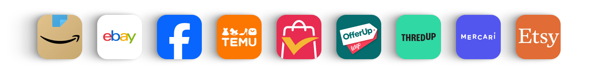
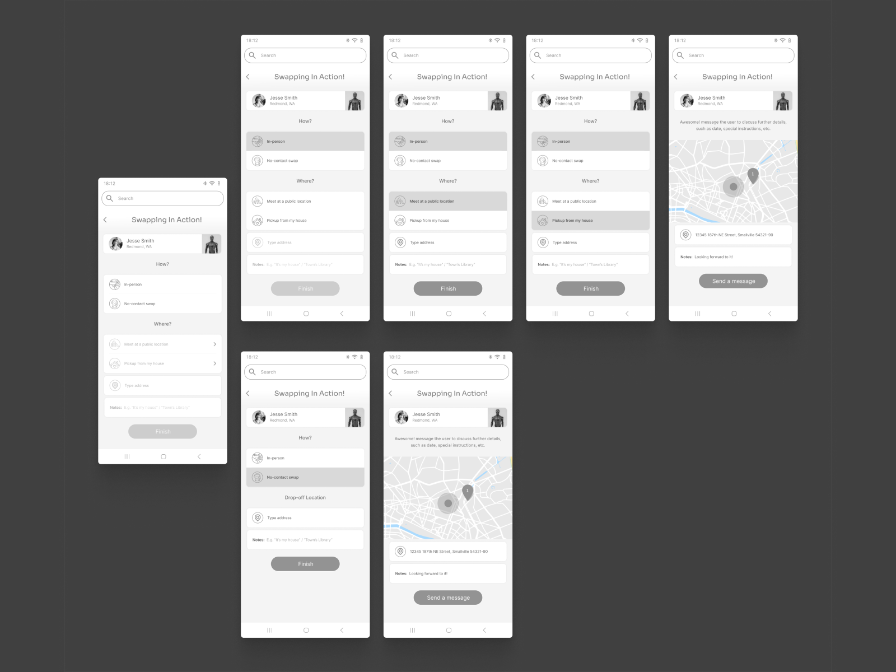
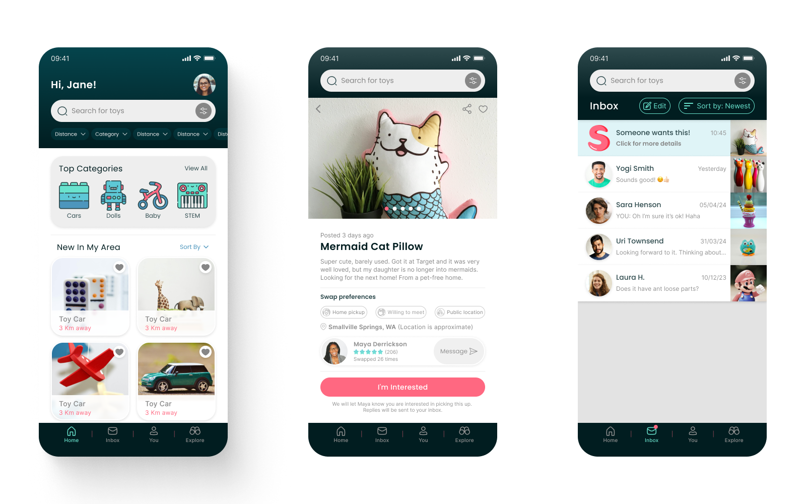

ToySwapp
ToySwapp is a community-driven platform designed to promote toy swapping among families. The platform encourages the reuse of toys, thus minimizing waste and teaching healthier consumer habits. ToySwapp aims to facilitate meaningful interactions within local communities.
Background
Children often find themselves quickly growing bored with their toys. Along with the effortless and quick way parents can buy and receive new products, purchasing new toys is simply a click away.
This is leading to a continuous cycle of new purchases, which not only contributes to environmental waste but also fosters unhealthy consumer habits at a young age. Exchanging unused toys can minimize waste and teach children about the value of sustainability and mindful consumption.
Problem
Outgrowing toys and the ease of purchasing new products contribute to a continuous cycle of excessive consumption among children, leading to environmental waste and promoting unhealthy consumer habits at a young age.
Solution
Create a friendly and accessible interface to share used toys.
Research
Having two children, I wanted to help solve this problem since I know how quickly they get bored with toys. This is leading to endless clutter around the house, with the kids not engaging enough with each toy before moving to the next one. The first step of the research was to make sure I was not being biased and whether other families share this feeling.
Goals and Methodologies
To identify users' motivations, concerns and expectations from such a platform, I sent participants a survey link (created in Google Forms) to collect and analyze results. I divided the questions into three sections:
- General questions — to understand my target audience better.
- Community engagement — to learn users' motivations towards such a platform.
- Concerns and suggestions — to receive more specific feedback.
Competitive Analysis
To study similar design patterns, I examined large e-commerce services (Amazon, eBay, Temu, AliExpress). To learn how second-hand apps are designed I examined OfferUp, Facebook Marketplace, ThredUP and Etsy. I took notes of the information architecture and visual design of such apps.
Survey Takeaways
There was a lot of interesting data and insights from the survey results. These are the most insightful:
My initial idea is a solid enough foundation to build upon:
- 10 out of 10 participants experienced unused toys clutter at home
- 6 out of 10 responses were apprehensive of the toy swapping concept
Main concerns that emerged from participants:
- Hygiene: receiving unclean toys
- Location and privacy sharing: especially when it is concerning children
Features participants stated are most important (this question was open-ended):
- Having accurate item photos and description (6 out of 10 participants)
- Having a rating / reviews system (2 out of 10 participants)
Ideation
The first step of conceptualizing was generating ideas through brainstorming. I started with possible solutions for the main concerns participants shared with me.
Project Roadmap
The brainstorm brought up many ideas for features and options. I later sorted and prioritised all these ideas to write a detailed project roadmap.
Design
The app's main feature is exchanging toys between users. After having an outline for the main screens, I focused on the swap flow and interaction. The first iteration was dividing the exchange to two options: In-person swapp and no-contact swap.
Updating to Mid-Hi Wireframes
While iterating on the swap flow, I also updated the wireframes so that they will become better prototypes.

Choosing Colors and Icons
I chose a color palette that I feel communicates friendliness, playfulness and security.

High Fidelity Wireframes
The next step was to apply the new style guide to my wireframes:
Testing and Iterating
I gathered feedback from multiple participants on the new prototype, which led to two significant insights that prompted a redesign of the entire swapping flow:
"Not everyone that wants to gift a toy necessarily want to receive one as well".
That led me to stop labeling the process as a "swap", but rather center around listing or receiving an item. I postponed the swapping feature for later development, perhaps as a feature.
"Not everyone wants to be engaged in messages".
That made me design two options for users to request an item:
- Requesting an item requires the user to message the other user.
- All notifications and requests will be facilitated by the app.
Takeaways
This project began with a problem that resonated with me, motivating me to contribute a solution. Through research, I discovered that many others shared similar feelings, providing valuable insights that fueled the design process. Given the project brief was to create an MVP within an 80-hour constraint, I prioritized essential features and learned a lot about designing under time limitations, including incorporating user feedback into the design effectively. I feel with further development this could become a powerful tool that could bring a lot of impact to users.